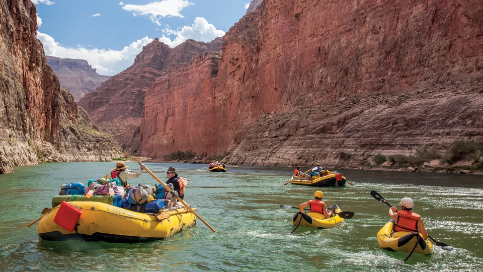

White Water Adventure
Available Trips
Find the perfect trip to meet your needs!
SCHEDULE YOUR TRIP TODAYOur Most Popular Trips
Half-Day Trip
Our half-day adventure is a 3 hour trip. There are some smaller class III rapids and some areas of more mellow waters for a well rounded trip. We dont offer any meals on this trip but feel free to bring some snacks. This is a great trip for some of our youngest rafters since it is our shortest and most mellow trip.
Full-Day Trip
Our full-day adventure is a 6 hour trip and one of our most popular trips. On this trip you will get to go over the same section of river as the half-day adventure and then we will stop for lunch provided by White Water Adventure. After lunch we will continue down the river and go over some more challenging class IV rapids.
Multi-Day Trips
If you are looking for bigger rapids and more adventure our multi-day trips are just for you. Our multi-day trips range from 2-5 days. We spend around 5-6 hours a day on the water before stopping at camp for the night. White Water Adventure supplies all meals and camp equipment. The rapids you encounter, class IV or class V, depends on how many days your trip is. Contact us for more information on multi-day trips.
| Half-Day | Full-Day | Multi-Day | |
|---|---|---|---|
| Adventure Level | Easier | Moderate | Moderate - Challenging |
| Largest Rapid Class | Class III | Class IV | Class IV, Class V |
| Length of Time | 3 Hours | 6 Hours | 2-5 Days |
| Meals Included | None | Lunch | Breakfast, Lunch, Dinner |